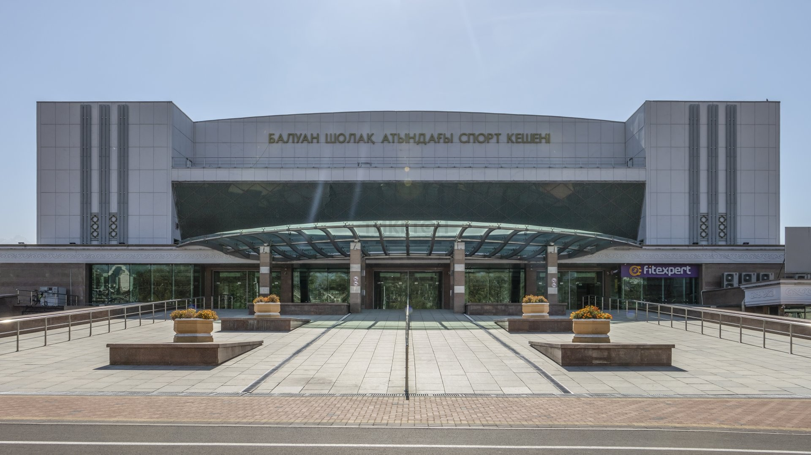
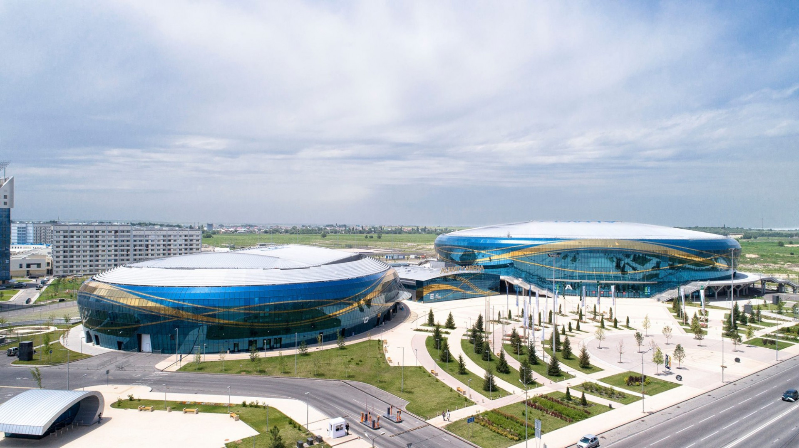

Спорт
Алма-Ата получила право на проведение зимних Азиатских игр в 2011 году. Для зимних Азиатских игр в Алма-Ате был построен целый ансамбль современных арен: ледовый стадион с 400-метровой дорожкой, лыжный и биатлонный стадионы, новая горнолыжная база, 90- и 120-метровый трамплины с трибунами на 20 тысяч зрителей, санно-бобслейная трасса. Церемония открытия Азиатских игр прошла в Астане. Также в Астане были проведены соревнования на льду — фигурное катание, мужской и женский хоккей, скоростной бег на коньках и шорт-трек. В Алма-Ате остаются «снежные» дисциплины — бег на лыжах, горнолыжный спорт, прыжки на лыжах с трамплина, биатлон, спортивное ориентирование на лыжах. А также хоккей с мячом в том случае, если этот вид спорта останется в программе Азиатских игр. В Алма-Ате прошла и официальная церемония закрытия. Город выдвигал свою кандидатуру на проведение Зимних Олимпийских игр в 2014 году, но не прошёл первый раунд отбора из-за загрязнённости атмосферы. С 29 января по 8 февраля 2017 года в Алма-Ате успешно прошла Зимняя Универсиада 2017.
Футбол и мини-футбол
В советское время ведущим футбольным клубом Казахской ССР был алма-атинский «Кайрат». Команда долгие годы выступала в высшей лиге чемпионата СССР. Самые известные игроки «Кайрата»: Сергей Квочкин, забивший гол сборной Бразилии на «Маракане» (1961), и Евгений Яровенко — олимпийский чемпион Сеула (1988). За команду выступали игроки сборной Казахстана по футболу Руслан Балтиев, Рафаэль Уразбахтин, Сергей Киров. В 2000-е годы футбольные традиции города развивает команда по футзалу МФК «Кайрат» (основан в 1995). В разные годы клуб возглавляли такие специалисты, как Анатолий Ионкин (Казахстан), Сергей Белокуров (Россия), Пауло Аугусто (Бразилия), Файсал Сааб (Бразилия). Клуб проводит домашние игры чемпионата на базе СК «Кайрат», построенной на деньги меценатов. На протяжении последних нескольких лет «Кайрат» неизменно побеждает в национальном чемпионате. С помощью бразильских легионеров МФК «Кайрат» успешно выступает и в Кубке УЕФА, в котором дважды был в четвёрке лучших команд Европы (2006, 2008). В августе 2018 года в Алма-Ате успешно проведён Чемпионат мира FISU по футзалу среди студентов
